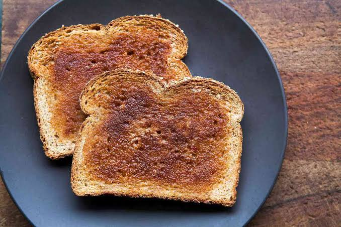

Home
Making a piece of toast

Materials and Ingredients
- Toaster
- Butter knife
- Sliced Bread
- Butter
Steps
- Put a slice of bread within the toaster.
- Set toaster to desired amount of time.
- Depress toaster lever and wait.
- When the toaster finishes the toast, remove the bread.
- Butter the bread using the butter knife.
- Enjoy your toast